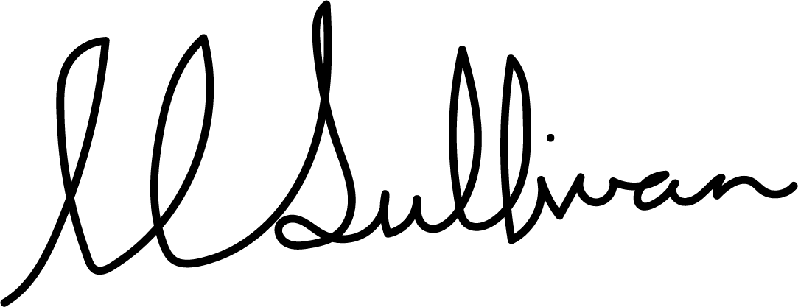

Hi,
I am a third (penultimate) year Bachelor of Advanced Computing student at the university of sydeny. I am majoring in Information Systems and Design. I have a passion for writing code - in particular web development. If you would like to have a look at what classes I have completed at university to date, please click here for my academic transcript
I currently work at a small website design and development company - Resonate Websites. We specialise in websites for sporting companies. My role is to assess website designs for their technical feasibility and then build them using Webflow.
Outside of work and study, I am a 100m sprinter. I compete for the Sydney University Athletics Club (SUAC) as a an Elite Athlete scholarship holder
I am currently seeking any role which alloys me to explore my passsion for writing code in a real-world envrironment.
Thank you for taking the time to look at my portfolio and learn a bit more about me. If you would like to contact me, I would love to here from you!
Cheers,
